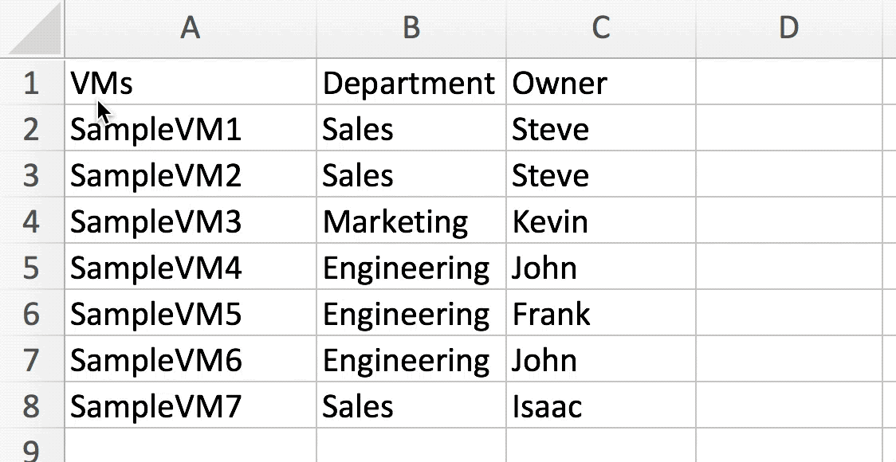

Tutorial¶
Scenario:¶
We need to create a custom group for each combination of department and owner. Unfortunately we do not have hypervisor tagging, so we can’t create these groups with several dynamic groups.
However, we do have an up to date spreadsheet of our virtual machines’ departments and owners.
1. Modifying the CSV to the supported format¶
Currently we have this Excel spreadsheet of virtual machines that we need to create static groups from:

We need to modify this spreadsheet to meet the supported CSV format requirements.
- First we need to add the two required headers.
We can change “VMs” to “Entity Name”
then we can add the “Entity Type” column.

Then save our spreadsheet as a CSV.
{kind=link}
After that, we’re done!
2. Running the script¶
We can then run csv_to_static_groups to create our groups.
$ ./csv_to_static_groups.py vm_departments_owners.csv -u administrator
After we have created these groups we also realize we need groups for all VM’s in each department without the owner!
Luckily, we can use the same CSV to create these groups by adding the group_headers option and only specify the “Department” column:
$ ./csv_to_static_groups.py vm_departments_owners.csv -u administrator --group_headers "Department"
3. Automatically Maintaining The Groups (Optional)¶
Until we have hypervisor tags, we need to ensure that the groups are corrected if entities in these static groups are accidentally added or removed. In other words, we need csv_to_static_groups to periodically check and fix any discrepancies.
- Automatically passing credentials
Since this will be running unattended, we need to automatically pass credentials to the script. csv_to_static_groups supports passing base64 encoded credentials as a parameter.
These can be generated with this command:
$ echo -n "username:password" | base64
Which gives us this hash:
dXNlcm5hbWU6cGFzc3dvcmQ=
We can pass these to the script with the encoded_creds option
--encoded_creds dXNlcm5hbWU6cGFzc3dvcmQ=
- Enable Logging
We’ll also want a way to save the logs to a file to check on any issues, so we’ll add the log option and provide a path to write the logs to.
--log /srv/tomcat/script/control/csv_to_static_groups_log.log
- Creating a config file
We can package these options into a convenient JSON formatted config file.
my_group_config.json:
{ "encoded_creds": "dXNlcm5hbWU6cGFzc3dvcmQ=", "log": "/srv/tomcat/script/control/csv_to_static_groups_log.log", "quiet": true, }
We can create the first set of groups with
$ ./csv_to_static_groups.py vm_departments_owners.csv --config my_group_config.json
And the second set with:
$ ./csv_to_static_groups.py vm_departments_owners.csv --config my_group_config.json --group_headers "Department"
- Scheduling the script
We can schedule this to run in crontab to periodically check and maintain the groups.
Remember to explicitly declare all paths
In this case everyday at 7am.
00 07 * * * ./srv/tomcat/script/control/csv_to_static_groups.py /srv/tomcat/script/control/vm_departments_owners.csv --config /srv/tomcat/script/control/my_group_config.json